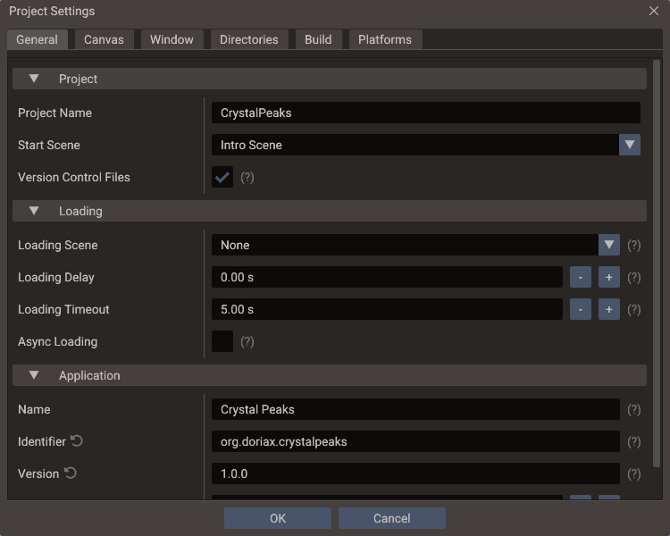
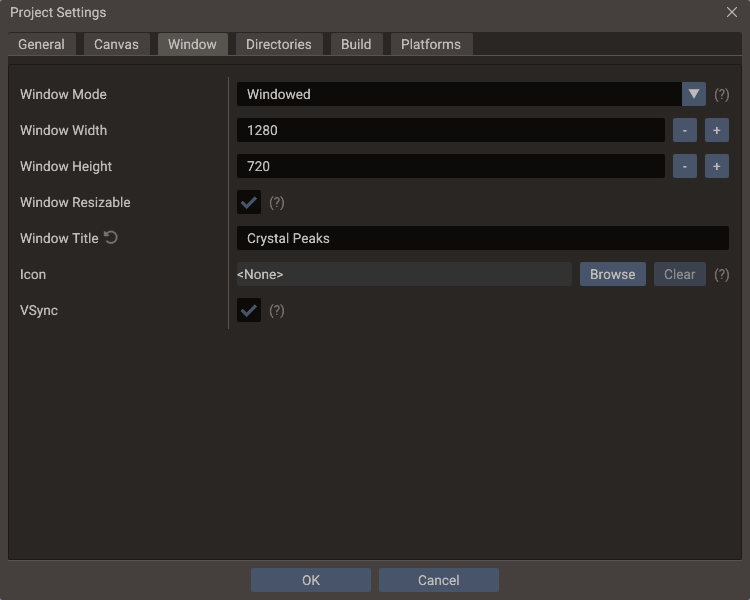
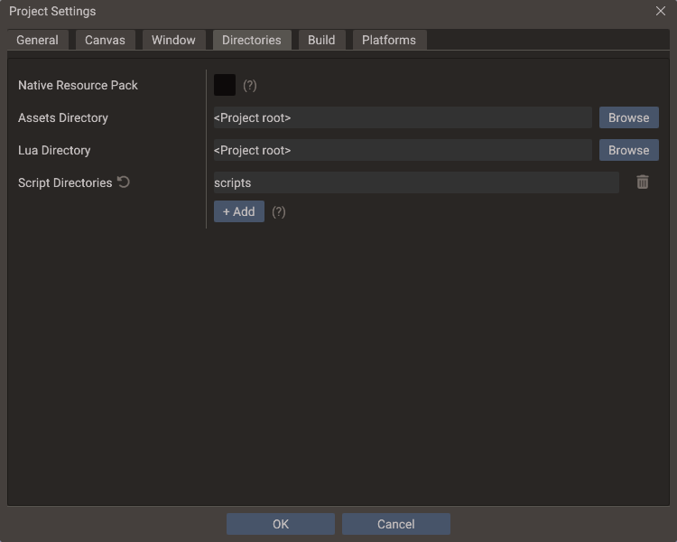
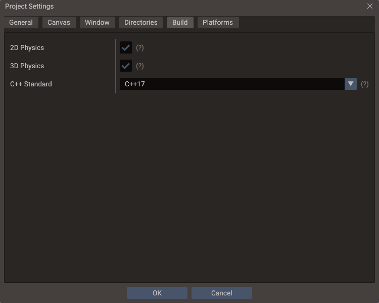
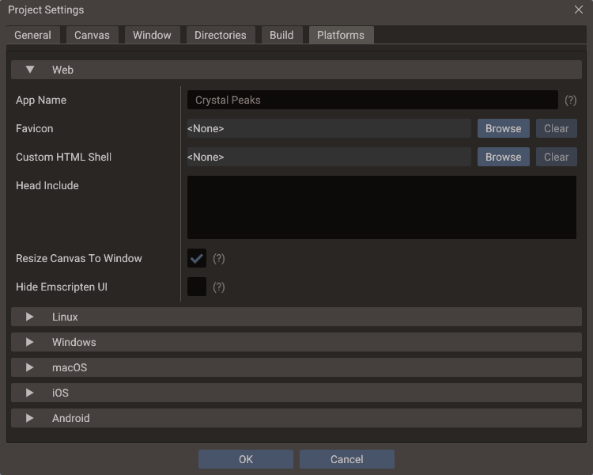

Project Settings¶
Project → Project Settings holds everything the project itself carries: how the game
is identified, how its canvas and window are set up, which folders it reads from, and
what each platform adds on top of that. Every value on this dialog is saved in
project.yaml and travels with the project in version control.
Machine-specific settings — the compiler, the CMake and Emscripten paths, the default export folder — are not here. They live in Editor Settings.
The dialog is a modal with six tabs and an OK / Cancel footer: nothing is written until you press OK. Settings that differ from their default show a small restore arrow next to the label; click it to put the default back. Hover the (?) marker at the end of a row for the setting's description.
General¶

Project¶
| Setting | Effect |
|---|---|
| Project Name | The project's name. Also the default application name, window title, and the identifier the exported executable and CMake target are named after |
| Start Scene | Scene the exported game loads at launch. Only saved scenes can be chosen |
| Version Control Files | Enabled. Keeps .gitignore and .gitattributes written at the project root, so the editor's working directory, your machine's build settings and each developer's own layout stay out of the repository. In a Git repository, it also shows the branch in the footer and marks changed lines in the Code Editor |
The Export Window shows the same Start Scene and writes back to this setting, so the two never disagree.
Version Control Files refreshes both files whenever the project is saved, and never replaces one the editor did not generate — see Version Control. It also turns on the Git status the editor shows.
Loading¶
The loading screen that SceneManager::loadScene shows between scenes. Exported games
and the editor's Play apply these at startup.
| Setting | Default | Effect |
|---|---|---|
| Loading Scene | None | UI scene shown on top while the game switches scenes, until the new scene has loaded. Only saved scenes can be chosen |
| Loading Delay | 0 s |
How long the loading scene covers the old scene before it is replaced: time for a fade in and for a click sound to finish |
| Loading Timeout | 5 s |
How long a load waits without progress before it gives up |
| Async Loading | Off | Exported games load textures, models and sounds on worker threads, so the loading scene keeps animating and its progress moves. The editor always loads this way. Web builds without thread support load synchronously |
See Loading screens for how a transition runs and how the loading scene can animate its progress and fade out.
Application¶
One identity, shared by every platform. Each platform section can override any of these four values; leaving an override empty inherits from here.
| Setting | Default | Used for |
|---|---|---|
| Name | The project name | The name every platform shows to the player |
| Identifier | com.yourcompany.project |
Reverse-DNS id behind the Apple bundle identifiers, the Android package name, and the web saves |
| Version | 1.0 |
The version shown to the player |
| Build | 1 |
Apple build number and Android version code. Increase it for every release |
Because each platform has its own rules for these fields, the editor validates as you type and reshapes the value at export:
| Field | Accepted here | Reshaped to |
|---|---|---|
| Identifier | Letters and digits between dots, e.g. com.company.game |
Apple CFBundleIdentifier, Android applicationId |
| Version | Up to three numbers from 0 to 65535, e.g. 1.0 |
Apple takes at most three parts; Windows pads to four (1.0 → 1.0.0.0) |
| Build | A whole number | Apple CFBundleVersion, Android versionCode |
The executable name comes from the project name
Name is the display name. The exported binary, the CMake target, and the
Windows InternalName/OriginalFilename are derived from the project name
instead, so renaming the application does not rename the executable.
Canvas¶
| Setting | Effect |
|---|---|
| Canvas Width / Height | The design resolution the scene is authored against |
| Scaling Mode | How that canvas maps to the real screen. A live preview under the dropdown shows the result |
| Texture Strategy | Whether non-power-of-two textures are padded (Fit), scaled (Resize) or kept as they are (None, the default). Only very old GPUs need the first two. The editor applies a change when the project is reopened |
See Multiple Resolutions for what each scaling mode does at runtime.
Window¶
Controls the OS window desktop builds create at startup.

| Setting | Default | Effect |
|---|---|---|
| Window Mode | Windowed | Initial window state: Windowed, Maximized, or Fullscreen |
| Window Width / Height | Canvas size | Initial window size in pixels, and the size restored when leaving fullscreen |
| Window Resizable | Enabled | Whether the player can resize the window. Exported Windows and macOS builds are always resizable |
| Window Title | Project name | Title-bar text; leave empty to use the project name |
| Icon | None | Application icon for desktop builds. Square PNG, 256×256 or larger recommended |
| VSync | Enabled | Synchronize Play mode and supported desktop builds to the display refresh rate |
The Icon is the desktop icon for all three desktop platforms: it is embedded into the Windows executable, used as the window and taskbar icon on Linux and Windows, and becomes the dock icon on macOS. Apple bundle icons and Android launcher icons are separate settings on the Platforms tab. A file inside the project is stored as a project-relative path, so the setting survives moving the project folder.
See Project Workflow — VSync and Window for the per-backend behavior tables, and Editor Settings for the editor window's own VSync.
Directories¶

| Setting | Effect |
|---|---|
| Native Resource Pack | Experimental. Packs exported assets and Lua files into one resources.pak for Desktop exports and Android builds made from Source Code exports |
| Assets Directory | Root for textures, models, sounds and fonts — what asset:// and every plain relative path resolve against |
| Lua Directory | Root for Lua script entries and the data files they read — what lua:// resolves against |
| Script Directories | Extra C++ include and compile roots for the build |
Asset and Lua references are stored relative to those two roots, so changing one migrates the whole project in a single step — see Assets and Lua directories. Script directories are about the C++ build rather than what the running game reads; see C++ Build Setup → Script directories.
The native resource pack has runtime restrictions — packed entries are read through
Data, not File — described in
Export Window → Native resource pack.
Build¶

| Setting | Default | Effect |
|---|---|---|
| 2D Physics | On | Builds Box2D into exported games |
| 3D Physics | On | Builds Jolt into exported games |
| C++ Standard | C++17 |
Language standard the project's C++ scripts are compiled with, in Play and in exported games |
The standard belongs to the project rather than to your machine — a script using
consteval needs C++20 wherever it is built — so it is saved in project.yaml and
travels with the project. Play and export both compile scripts with it, and an export
compiles the engine with it too.
Which compilers can satisfy it is machine-specific: pick one under Editor Settings → Desktop. C++17 works anywhere the editor runs; C++20 and C++23 need a recent MSVC, GCC or Clang.
The generated CMakeLists.txt follows this setting
CMAKE_CXX_STANDARD in the generated project comes from here, so there is nothing to
change by hand — and any edit is overwritten on the next Play or Save. See C++ Build
Setup → Customizing the build.
Physics backends¶
Turn off a backend the game never uses and the export leaves it out — its library, its bodies and joints, and their C++ and Lua API — for a smaller build that compiles faster, which matters most on Web and mobile. Desktop, Web and Source Code exports all honor it, including the generated Xcode and Android Studio projects.
Play is not affected: the editor always runs with both backends, so a scene can still
hold a body the export will drop. The export warns when it does, naming the scenes, and
the exported game runs without those bodies and joints. A C++ script that includes
Body2D.h or Body3D.h stops the export build with an error naming this setting; code
that must build either way can test QUANTUM_PHYSICS_2D and QUANTUM_PHYSICS_3D, which are
only defined for an enabled backend. For picking and line-of-sight without any physics, cast against mesh
bounds with RayFilter::BOUNDS.
Platforms¶
Each platform gets its own collapsible section, closed by default. A section holds only what that platform adds on top of the shared Application block: any name, identifier, version or build field left empty inherits, and the field's placeholder shows the value it would inherit as you type.
These settings are written into the exported project. Web, Linux and Windows settings apply to every export mode that reaches those platforms; macOS, iOS and Android settings are applied to Source Code exports, which is where the Xcode and Android Studio workspaces are generated.
Web¶

| Setting | Default | Effect |
|---|---|---|
| App Name | Shared name | Title of the exported web page |
| Favicon | Quantum icon | Browser-tab icon, copied next to the page and linked from its <head> |
| Custom HTML Shell | None | HTML wrapper for the generated page. The file must contain a {{QUANTUM_DEFAULT_HTML}} marker |
| Head Include | Empty | HTML inserted into the page's <head> |
| Resize Canvas To Window | Enabled | Resizes the rendering surface to the browser window. Aspect ratio and stretching still follow the canvas Scaling Mode |
| Hide Emscripten UI | Disabled | Hides the default logo, status line, controls and output console. The nodes are kept alive, so the SDK's status callbacks keep working |
| Game Portal | None | The web game portal whose SDK the export builds in, for the WebPortal class: CrazyGames, Poki, GameDistribution, Yandex Games or YouTube Playables |
| Portal Game ID | Empty | GameDistribution only: the game's ID from the GameDistribution dashboard. Without it the SDK is not loaded |
A custom shell replaces {{QUANTUM_DEFAULT_HTML}} with the page Emscripten generated;
the build fails with a clear CMake error when the marker is missing. Two more optional
markers give you control over placement: {{QUANTUM_TITLE}} is replaced with the app
name, and {{QUANTUM_HEAD_INCLUDE}} receives the favicon link, the head include, and the
styles the two checkboxes add. Without that second marker the block is inserted before
</head>.
A game sent to several portals needs one export per portal, since each build includes one
SDK. Choosing YouTube Playables also adds YouTube's SDK <script> to the page head, which
YouTube requires to load before the game. See
Monetization → Web portals.
Linux¶
| Setting | Default | Effect |
|---|---|---|
| App Name | Shared name | Name in the generated .desktop launcher |
| Comment | Empty | Comment — a short description |
| Categories | Game; |
Categories, following the Desktop Entry spec. Example: Game;ArcadeGame; |
The launcher entry is written beside the executable at build time, together with
app_icon.png when the Window icon is set. Installing it is what gives the
game an icon in menus and docks — and on Wayland, in the window itself.
Windows¶
Writes the executable's version resource. The desktop icon comes from the Window tab and is reused here.
| Setting | Default | Written to |
|---|---|---|
| Product Name | Shared name | ProductName and FileDescription |
| Company Name | Empty | CompanyName (omitted when empty) |
| File Version | Shared version, padded to four parts | FILEVERSION and the FileVersion string |
| Product Version | Shared version, padded to four parts | PRODUCTVERSION and the ProductVersion string |
Both version fields take up to four numbers from 0 to 65535. Type a shorter one and the dialog shows the padded result underneath — Exports as 1.0.0.0 — so there is no guessing about what lands in the resource.
macOS¶
| Setting | Default | Written to |
|---|---|---|
| App Name | Shared name | Bundle display name |
| Bundle Identifier | Shared identifier | CFBundleIdentifier |
| Version Name | Shared version | CFBundleShortVersionString |
| Build Number | Shared build | CFBundleVersion |
| Icon | None | Source image for the generated AppIcon asset set |
| High DPI | Enabled | Allows high-DPI rendering |
Bundle settings need a Source Code export
They apply to the Apple projects generated by a Source Code export. Desktop
mode produces a standalone executable rather than an .app bundle, so it uses the
Window icon and ignores the bundle fields.
iOS¶
| Setting | Default | Written to |
|---|---|---|
| App Name | Shared name | Bundle display name |
| Bundle Identifier | Shared identifier | CFBundleIdentifier |
| Version Name | Shared version | CFBundleShortVersionString |
| Build Number | Shared build | CFBundleVersion |
| Icon | None | Source image for the generated AppIcon asset set |
| Hide Status Bar | Enabled | Hides the status bar while the app runs |
| Hide Home Indicator | Enabled | Requests hiding the home indicator |
| High Refresh Rate | Enabled | Allows 120 Hz displays where supported |
| Google AdMob | Disabled | Links Google Mobile Ads into the app, for the AdMob class. Without it, AdMob calls report errors |
| AdMob App ID | Google's sample app | GADApplicationIdentifier: the app ID from the AdMob console. Left empty, the export uses Google's sample app, which only shows test ads |
| Tracking Description | Empty | NSUserTrackingUsageDescription, the text of iOS's tracking permission prompt. Needed when the consent message asks for tracking permission |
| App Store Purchases | Disabled | Compiles in StoreKit 2, for the InAppPurchase class. Building it needs Xcode 16.3 or later |
Apple bundle identifiers accept letters, digits and hyphens (com.company.my-game), and
Apple versions accept at most three numbers — the dialog warns inline when a value does
not fit.
AdMob App ID and Tracking Description apply only with Google AdMob on;
otherwise the export removes both keys from Info.plist. The App ID has the form
ca-app-pub-…~…, and the dialog warns when it gets an ad unit ID (with /) instead.
Without App Store Purchases, the export leaves the StoreKit adapter out of the app.
See Monetization for using both services.
Android¶
| Setting | Default | Written to |
|---|---|---|
| App Name | Shared name | The launcher label in strings.xml |
| Package Name | Shared identifier | applicationId in build.gradle. Must be a valid Java package name |
| Version Code | Shared build | versionCode. A whole number from 1 to 2100000000 |
| Version Name | Shared version | versionName, the visible version string |
| Launcher Icon | None | Fallback launcher icon |
| Adaptive Foreground / Background | None | Adaptive icon layers. Set both to get an adaptive icon; otherwise the launcher icon is used |
| Min SDK | 21 |
minSdkVersion |
| Target SDK | 36 |
targetSdkVersion. Never below Min SDK |
| Orientation | Unspecified | The activity's requested orientation: Portrait, Landscape, Sensor Portrait, Sensor Landscape, or Full Sensor |
| Architectures | All four | The ABIs in the APK: armeabi-v7a, arm64-v8a, x86, x86_64 |
| Permissions | None | <uses-permission> entries in AndroidManifest.xml |
| Allow Backup | Enabled | android:allowBackup |
| Keep Screen On | Disabled | Adds FLAG_KEEP_SCREEN_ON to the activity |
| Fullscreen | Enabled | Uses the fullscreen theme and hides the system bars |
| Google AdMob | Disabled | Compiles in Google Mobile Ads and Google's consent SDK, for the AdMob class |
| AdMob App ID | Google's sample app | The com.google.android.gms.ads.APPLICATION_ID entry of AndroidManifest.xml: the app ID from the AdMob console. Left empty, the export uses Google's sample app, which only shows test ads |
| Google Play Billing | Disabled | Compiles in Google Play Billing, for the InAppPurchase class |
The permission list covers the common Android permissions by manifest name. Two
shortcuts sit above it: None clears the list, and Game Defaults selects
INTERNET, ACCESS_NETWORK_STATE and VIBRATE. Declaring a permission in the manifest
is not the same as being granted it — runtime-permission prompts are still your own
code's job.
At least one architecture
Clearing every ABI leaves nothing to build, so OK is disabled until one is ticked. A Source Code export made with no architecture selected fails with the same message.
Google's SDKs go into the export only when their service is enabled, so a game without ads or purchases ships without them. Both need newer Android versions than the default Min SDK: the export raises it to 24 for AdMob and 23 for Play Billing, with a warning, and compiles against SDK 35 or newer. When Min SDK is lower, the dialog says so under the checkboxes. As on iOS, it also warns when AdMob App ID holds an ad unit ID.
With AdMob on, also declare in the Play Console that the app contains ads and uses the advertising ID. See Monetization for using both services.
Where the values are stored¶
Everything on this dialog is written to project.yaml, and only values that differ from
their default are written — a project that never opens the Platforms tab keeps a clean
file.
| Block | Holds |
|---|---|
| Top level | name, canvasWidth, scalingMode, vsync, windowMode, windowTitle, windowIcon, assetsDir, luaDir, scriptDirs, cxxStandard, physics2D, physics3D, packNativeResources, … |
application |
name, identifier, version, build |
web, linux, windows, macos, ios, android |
That platform's overrides only |
export |
Shader overrides and the graphic backends picked in the Export Window |
Two things that used to live in project.yaml no longer do: the compiler kit
(cmakeCCompiler, cmakeCxxCompiler, cmakeGenerator) and the parallel job count
(cmakeBuildJobs). They are machine-specific, so they moved to the editor's
settings.yaml — see Editor Settings. Opening an older project
migrates those four values automatically, once, and never over settings the current
machine already has.
See also¶
- Editor Settings — the machine-level counterpart
- Project Workflow — project anatomy, scenes, bundles, save strategy
- Version Control — what to commit, and where per-user state is kept
- Export Window — where these settings are applied